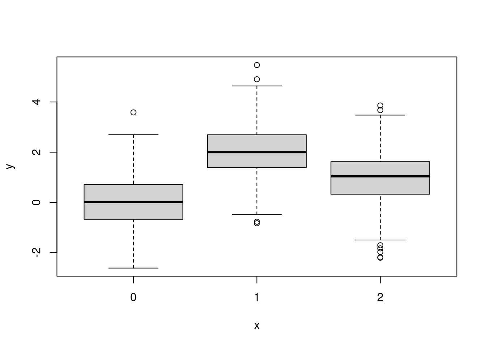
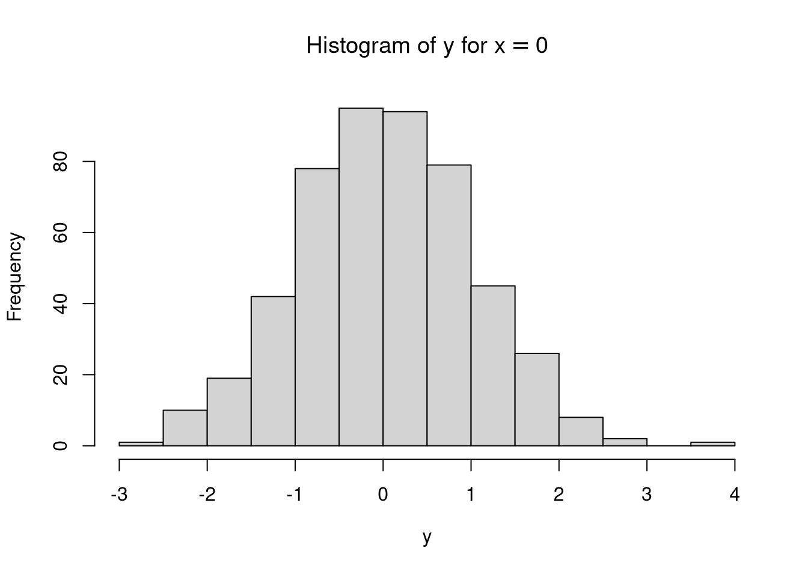
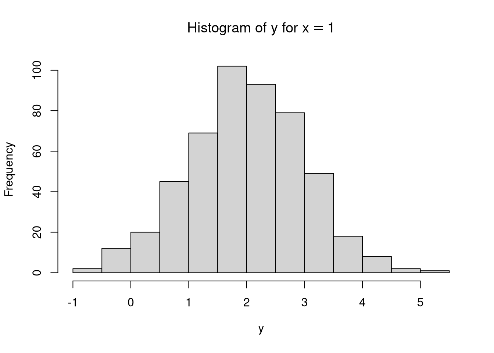
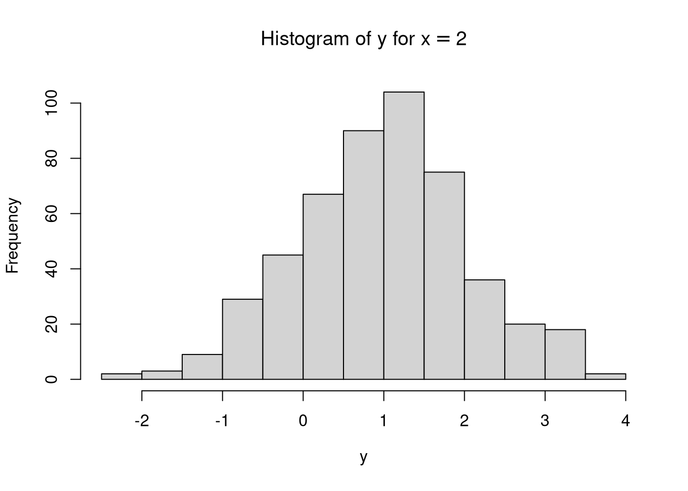

Chapter 5 One-Way Analysis of Variance
In this section, one-way analysis of variance is presented as a structural equation model using the RAM notation. Let \(y\) be a continuous dependent variable, \(x\) be a categorical independent variable with three levels \(\left( x = \{0, 1, 2\} \right)\). The dependent variable \(x\) can be dummy coded as
| \(x\) | \(x_1\) | \(x_2\) |
|---|---|---|
| \(x = 0\) | 0 | 0 |
| \(x = 1\) | 1 | 0 |
| \(x = 2\) | 0 | 1 |
\(\varepsilon\) be the stochastic error term with mean 0 and constant variance of \(\sigma_{\varepsilon}^{2}\) across the values of the regressors. The associations of the variables are given by
\[\begin{equation*} y = \beta_0 + \beta_1 x_1 + \beta_2 x_2 + \varepsilon \end{equation*}\]
where
- \(\beta_0\) is the expected value of \(y\) when \(x = 0\)
- \(\beta_1\) is the unit change in \(y\) for unit change in \(x_1\) while \(x_2\) is constant
- \(\beta_2\) is the unit change in \(y\) for unit change in \(x_2\) while \(x_1\) is constant
- \(\beta_0 + \beta_1\) is the expected value of \(y\) when \(x = 1\)
- \(\beta_0 + \beta_2\) is the expected value of \(y\) when \(x = 2\)
Figure 5.1: One-Way Analysis of Variance
5.1 Symbolic
Let \(\left\{ y, x_1, x_2, \varepsilon \right\}\) be the variables of interest.
\[\begin{align*}\mathbf{A} &=\left( \begin{array}{cccc} 0 & \beta _{1} & \beta _{2} & 1 \\ 0 & 0 & 0 & 0 \\ 0 & 0 & 0 & 0 \\ 0 & 0 & 0 & 0 \end{array} \right)\end{align*}\]
\[\begin{align*}\mathbf{S} &=\left( \begin{array}{cccc} 0 & 0 & 0 & 0 \\ 0 & \sigma _{x_{1}} ^{2} & 0 & 0 \\ 0 & 0 & \sigma _{x_{2}} ^{2} & 0 \\ 0 & 0 & 0 & \sigma _{\varepsilon } ^{2} \end{array} \right)\end{align*}\]
\[\begin{align*}\mathbf{C} &=\left( \mathbf{I} - \mathbf{A} \right)^{-1} \mathbf{S} \left[ \left( \mathbf{I} - \mathbf{A} \right)^{-1} \right]^{\mathsf{T}} \\\\ &=\mathbf{E} \mathbf{S} \mathbf{E}^{\mathsf{T}} \\\\ &=\left( \begin{array}{cccc} 1 & \beta _{1} & \beta _{2} & 1 \\ 0 & 1 & 0 & 0 \\ 0 & 0 & 1 & 0 \\ 0 & 0 & 0 & 1 \end{array} \right)\left( \begin{array}{cccc} 0 & 0 & 0 & 0 \\ 0 & \sigma _{x_{1}} ^{2} & 0 & 0 \\ 0 & 0 & \sigma _{x_{2}} ^{2} & 0 \\ 0 & 0 & 0 & \sigma _{\varepsilon } ^{2} \end{array} \right)\left( \begin{array}{cccc} 1 & \beta _{1} & \beta _{2} & 1 \\ 0 & 1 & 0 & 0 \\ 0 & 0 & 1 & 0 \\ 0 & 0 & 0 & 1 \end{array} \right)^{\mathsf{T}}\\ &=\left( \begin{array}{cccc} \sigma _{x_{1}} ^{2} \beta _{1} ^{2} + \sigma _{x_{2}} ^{2} \beta _{2} ^{2} + \sigma _{\varepsilon } ^{2} & \beta _{1} \sigma _{x_{1}} ^{2} & \beta _{2} \sigma _{x_{2}} ^{2} & \sigma _{\varepsilon } ^{2} \\ \sigma _{x_{1}} ^{2} \beta _{1} & \sigma _{x_{1}} ^{2} & 0 & 0 \\ \sigma _{x_{2}} ^{2} \beta _{2} & 0 & \sigma _{x_{2}} ^{2} & 0 \\ \sigma _{\varepsilon } ^{2} & 0 & 0 & \sigma _{\varepsilon } ^{2} \end{array} \right)\end{align*}\]
\[\begin{align*}\mathbf{F} &=\left( \begin{array}{cccc} 1 & 0 & 0 & 0 \\ 0 & 1 & 0 & 0 \\ 0 & 0 & 1 & 0 \end{array} \right)\end{align*}\]
\[\begin{align*}\mathbf{M} &=\mathbf{F} \left( \mathbf{I} - \mathbf{A} \right)^{-1} \mathbf{S} \left[ \left( \mathbf{I} - \mathbf{A} \right)^{-1} \right]^{\mathsf{T}} \mathbf{F}^{\mathsf{T}}\\ &=\mathbf{F} \mathbf{E} \mathbf{S} \mathbf{E}^{\mathsf{T}} \mathbf{F}^{\mathsf{T}} \\\\ &=\mathbf{F} \mathbf{C} \mathbf{F}^{\mathsf{T}} \\\\ &=\left( \begin{array}{cccc} 1 & 0 & 0 & 0 \\ 0 & 1 & 0 & 0 \\ 0 & 0 & 1 & 0 \end{array} \right)\left( \begin{array}{cccc} \sigma _{x_{1}} ^{2} \beta _{1} ^{2} + \sigma _{x_{2}} ^{2} \beta _{2} ^{2} + \sigma _{\varepsilon } ^{2} & \beta _{1} \sigma _{x_{1}} ^{2} & \beta _{2} \sigma _{x_{2}} ^{2} & \sigma _{\varepsilon } ^{2} \\ \sigma _{x_{1}} ^{2} \beta _{1} & \sigma _{x_{1}} ^{2} & 0 & 0 \\ \sigma _{x_{2}} ^{2} \beta _{2} & 0 & \sigma _{x_{2}} ^{2} & 0 \\ \sigma _{\varepsilon } ^{2} & 0 & 0 & \sigma _{\varepsilon } ^{2} \end{array} \right)\left( \begin{array}{cccc} 1 & 0 & 0 & 0 \\ 0 & 1 & 0 & 0 \\ 0 & 0 & 1 & 0 \end{array} \right)^{\mathsf{T}} \\\\ &=\left( \begin{array}{ccc} \sigma _{x_{1}} ^{2} \beta _{1} ^{2} + \sigma _{x_{2}} ^{2} \beta _{2} ^{2} + \sigma _{\varepsilon } ^{2} & \beta _{1} \sigma _{x_{1}} ^{2} & \beta _{2} \sigma _{x_{2}} ^{2} \\ \sigma _{x_{1}} ^{2} \beta _{1} & \sigma _{x_{1}} ^{2} & 0 \\ \sigma _{x_{2}} ^{2} \beta _{2} & 0 & \sigma _{x_{2}} ^{2} \end{array} \right)\end{align*}\]
\[\begin{align*}\mathbf{v} &=\left( \mathbf{I} - \mathbf{A} \right)^{-1} \mathbf{u}\\ &=\left[\left( \begin{array}{cccc} 1 & 0 & 0 & 0 \\ 0 & 1 & 0 & 0 \\ 0 & 0 & 1 & 0 \\ 0 & 0 & 0 & 1 \end{array} \right)-\left( \begin{array}{cccc} 0 & \beta _{1} & \beta _{2} & 1 \\ 0 & 0 & 0 & 0 \\ 0 & 0 & 0 & 0 \\ 0 & 0 & 0 & 0 \end{array} \right)\right]^{\mathsf{-1}}\left( \begin{array}{c} \beta _{0} \\ \mu _{x_{1}} \\ \mu _{x_{2}} \\ 0 \end{array} \right)\\ &=\left( \begin{array}{c} \beta _{0} + \beta _{1} \mu _{x_{1}} + \beta _{2} \mu _{x_{2}} \\ \mu _{x_{1}} \\ \mu _{x_{2}} \\ 0 \end{array} \right)\end{align*}\]
\[\begin{align*}\mathbf{u} &=\left( \mathbf{I} - \mathbf{A} \right) \mathbf{v}\\ &=\left[\left( \begin{array}{cccc} 1 & 0 & 0 & 0 \\ 0 & 1 & 0 & 0 \\ 0 & 0 & 1 & 0 \\ 0 & 0 & 0 & 1 \end{array} \right)-\left( \begin{array}{cccc} 0 & \beta _{1} & \beta _{2} & 1 \\ 0 & 0 & 0 & 0 \\ 0 & 0 & 0 & 0 \\ 0 & 0 & 0 & 0 \end{array} \right)\right]\left( \begin{array}{c} \beta _{0} + \beta _{1} \mu _{x_{1}} + \beta _{2} \mu _{x_{2}} \\ \mu _{x_{1}} \\ \mu _{x_{2}} \\ 0 \end{array} \right)\\ &=\left( \begin{array}{c} \beta _{0} \\ \mu _{x_{1}} \\ \mu _{x_{2}} \\ 0 \end{array} \right)\end{align*}\]
\[\begin{align*}\mathbf{g} &=\mathbf{F} \left( \mathbf{I} - \mathbf{A} \right)^{-1} \mathbf{u}\\ &=\left[\left( \begin{array}{cccc} 1 & 0 & 0 & 0 \\ 0 & 1 & 0 & 0 \\ 0 & 0 & 1 & 0 \\ 0 & 0 & 0 & 1 \end{array} \right)-\left( \begin{array}{cccc} 0 & \beta _{1} & \beta _{2} & 1 \\ 0 & 0 & 0 & 0 \\ 0 & 0 & 0 & 0 \\ 0 & 0 & 0 & 0 \end{array} \right)\right]^{-1}\left( \begin{array}{c} \beta _{0} \\ \mu _{x_{1}} \\ \mu _{x_{2}} \\ 0 \end{array} \right)\\ &=\left( \begin{array}{c} \beta _{0} + \beta _{1} \mu _{x_{1}} + \beta _{2} \mu _{x_{2}} \\ \mu _{x_{1}} \\ \mu _{x_{2}} \end{array} \right)\end{align*}\]
5.1.1 Using the ramR Package
A## y x1 x2 e
## y "0" "beta[1]" "beta[2]" "1"
## x1 "0" "0" "0" "0"
## x2 "0" "0" "0" "0"
## e "0" "0" "0" "0"S## y x1 x2 e
## y "0" "0" "0" "0"
## x1 "0" "sigma[x1]^2" "0" "0"
## x2 "0" "0" "sigma[x2]^2" "0"
## e "0" "0" "0" "sigma[varepsilon]^2"u## u
## y "beta[0]"
## x1 "mu[x1]"
## x2 "mu[x2]"
## e "0"filter## y x1 x2 e
## y 1 0 0 0
## x1 0 1 0 0
## x2 0 0 1 0The covariance expectations
can be symbolically derived using the ramR::C_sym() function.
ramR::C_sym(A, S)## {{sigma[x1]^2*beta[1]^2+sigma[x2]^2*beta[2]^2+sigma[varepsilon]^2, beta[1]*sigma[x1]^2, beta[2]*sigma[x2]^2, sigma[varepsilon]^2},
## { sigma[x1]^2*beta[1], sigma[x1]^2, 0, 0},
## { sigma[x2]^2*beta[2], 0, sigma[x2]^2, 0},
## { sigma[varepsilon]^2, 0, 0, sigma[varepsilon]^2}}\[\begin{equation*}\mathbf{C} =\left( \begin{array}{cccc} \sigma _{x_{1}} ^{2} \beta _{1} ^{2} + \sigma _{x_{2}} ^{2} \beta _{2} ^{2} + \sigma _{\varepsilon } ^{2} & \beta _{1} \sigma _{x_{1}} ^{2} & \beta _{2} \sigma _{x_{2}} ^{2} & \sigma _{\varepsilon } ^{2} \\ \sigma _{x_{1}} ^{2} \beta _{1} & \sigma _{x_{1}} ^{2} & 0 & 0 \\ \sigma _{x_{2}} ^{2} \beta _{2} & 0 & \sigma _{x_{2}} ^{2} & 0 \\ \sigma _{\varepsilon } ^{2} & 0 & 0 & \sigma _{\varepsilon } ^{2} \end{array} \right)\end{equation*}\]
The covariance expectations for the observed variables
can be symbolically derived using the ramR::M_sym() function.
ramR::M_sym(A, S, filter)## {{sigma[x1]^2*beta[1]^2+sigma[x2]^2*beta[2]^2+sigma[varepsilon]^2, beta[1]*sigma[x1]^2, beta[2]*sigma[x2]^2},
## { sigma[x1]^2*beta[1], sigma[x1]^2, 0},
## { sigma[x2]^2*beta[2], 0, sigma[x2]^2}}\[\begin{equation*}\mathbf{M} =\left( \begin{array}{ccc} \sigma _{x_{1}} ^{2} \beta _{1} ^{2} + \sigma _{x_{2}} ^{2} \beta _{2} ^{2} + \sigma _{\varepsilon } ^{2} & \beta _{1} \sigma _{x_{1}} ^{2} & \beta _{2} \sigma _{x_{2}} ^{2} \\ \sigma _{x_{1}} ^{2} \beta _{1} & \sigma _{x_{1}} ^{2} & 0 \\ \sigma _{x_{2}} ^{2} \beta _{2} & 0 & \sigma _{x_{2}} ^{2} \end{array} \right)\end{equation*}\]
The mean expectations
can be symbolically derived using the ramR::v_sym() function.
ramR::v_sym(A, u)## {{beta[0]+beta[1]*mu[x1]+beta[2]*mu[x2]},
## { mu[x1]},
## { mu[x2]},
## { 0}}\[\begin{equation*}\mathbf{v} =\left( \begin{array}{c} \beta _{0} + \beta _{1} \mu _{x_{1}} + \beta _{2} \mu _{x_{2}} \\ \mu _{x_{1}} \\ \mu _{x_{2}} \\ 0 \end{array} \right)\end{equation*}\]
The mean expectations for the observed variables
can be symbolically derived using the ramR::g_sym() function.
ramR::g_sym(A, u, filter)## {{beta[0]+beta[1]*mu[x1]+beta[2]*mu[x2]},
## { mu[x1]},
## { mu[x2]}}\[\begin{equation*}\mathbf{g} =\left( \begin{array}{c} \beta _{0} + \beta _{1} \mu _{x_{1}} + \beta _{2} \mu _{x_{2}} \\ \mu _{x_{1}} \\ \mu _{x_{2}} \end{array} \right)\end{equation*}\]
5.2 Numerical Example
Let df be a random sample from a population with the following parameters
| Parameter | \(x = 0\) | \(x = 1\) | \(x = 2\) |
|---|---|---|---|
| Sample Size | 500 | 500 | 500 |
| \(\mathbb{E} \left( y \mid x \right)\) | 0 | 2 | 1 |
| \(\mathrm{Var} \left( y \mid x \right)\) | 1 | 1 | 1 |
| Parameter | Description | Value |
|---|---|---|
| \(\beta_0\) | \(\mathbb{E} \left( y \mid x = 0 \right)\) | 0 |
| \(\beta_1\) | \(\mathbb{E} \left( y \mid x = 1 \right) - \mathbb{E} \left( y \mid x = 0 \right)\) | 2 |
| \(\beta_2\) | \(\mathbb{E} \left( y \mid x = 2 \right) - \mathbb{E} \left( y \mid x = 0 \right)\) | 1 |
head(df)## y x
## 1 -0.6013830 0
## 2 -0.1358161 0
## 3 -0.9872728 0
## 4 0.8319250 0
## 5 -0.7950595 0
## 6 0.3404646 0summary(df)## y x
## Min. :-2.61364 0:500
## 1st Qu.: 0.08094 1:500
## Median : 1.02617 2:500
## Mean : 1.00814
## 3rd Qu.: 1.90112
## Max. : 5.47091



5.2.1 One-Way Analysis of Variance
Make sure that \(x\) is of class factor for lm and aov
to treat it as a categorical variable.
str(df)## 'data.frame': 1500 obs. of 2 variables:
## $ y: num -0.601 -0.136 -0.987 0.832 -0.795 ...
## $ x: Factor w/ 3 levels "0","1","2": 1 1 1 1 1 1 1 1 1 1 ...summary(aov(y ~ x, data = df))## Df Sum Sq Mean Sq F value Pr(>F)
## x 2 983.8 491.9 471.4 <2e-16 ***
## Residuals 1497 1562.2 1.0
## ---
## Signif. codes: 0 '***' 0.001 '**' 0.01 '*' 0.05 '.' 0.1 ' ' 15.2.2 Linear Regression
summary(lm(y ~ x, data = df))##
## Call:
## lm(formula = y ~ x, data = df)
##
## Residuals:
## Min 1Q Median 3Q Max
## -3.1792 -0.6469 0.0021 0.6751 3.5538
##
## Coefficients:
## Estimate Std. Error t value Pr(>|t|)
## (Intercept) 0.03083 0.04569 0.675 0.5
## x1 1.98309 0.06461 30.694 <2e-16 ***
## x2 0.94884 0.06461 14.686 <2e-16 ***
## ---
## Signif. codes: 0 '***' 0.001 '**' 0.01 '*' 0.05 '.' 0.1 ' ' 1
##
## Residual standard error: 1.022 on 1497 degrees of freedom
## Multiple R-squared: 0.3864, Adjusted R-squared: 0.3856
## F-statistic: 471.4 on 2 and 1497 DF, p-value: < 2.2e-165.2.3 Structural Equation Modeling
We have to dummy code the data set first before fitting the model.
The model.matrix function which is used to create a design matrix
can be used to dummy code x.
Make sure that x is a factor.
The first column of the design matrix is a matrix of ones.
Since we do not need this column,
we can replace this column with the values of y.
Make sure to name rename the first column
as lavaan relies on the column names.
df_dummy <- model.matrix(y ~ x, data = df)
df_dummy[, 1] <- df$y
colnames(df_dummy)[1] <- "y"
head(df_dummy)## y x1 x2
## 1 -0.6013830 0 0
## 2 -0.1358161 0 0
## 3 -0.9872728 0 0
## 4 0.8319250 0 0
## 5 -0.7950595 0 0
## 6 0.3404646 0 05.2.3.1 lavaan (Rosseel 2012)
model <- "
y ~ x1 + x2
"
fit <- lavaan::sem(
model,
data = df_dummy,
meanstructure = TRUE,
fixed.x = FALSE
)
lavaan::summary(fit)## lavaan 0.6-7 ended normally after 22 iterations
##
## Estimator ML
## Optimization method NLMINB
## Number of free parameters 9
##
## Number of observations 1500
##
## Model Test User Model:
##
## Test statistic 0.000
## Degrees of freedom 0
##
## Parameter Estimates:
##
## Standard errors Standard
## Information Expected
## Information saturated (h1) model Structured
##
## Regressions:
## Estimate Std.Err z-value P(>|z|)
## y ~
## x1 1.983 0.065 30.725 0.000
## x2 0.949 0.065 14.701 0.000
##
## Covariances:
## Estimate Std.Err z-value P(>|z|)
## x1 ~~
## x2 -0.111 0.006 -17.321 0.000
##
## Intercepts:
## Estimate Std.Err z-value P(>|z|)
## .y 0.031 0.046 0.676 0.499
## x1 0.333 0.012 27.386 0.000
## x2 0.333 0.012 27.386 0.000
##
## Variances:
## Estimate Std.Err z-value P(>|z|)
## .y 1.041 0.038 27.386 0.000
## x1 0.222 0.008 27.386 0.000
## x2 0.222 0.008 27.386 0.0005.2.3.2 OpenMx (Boker et al. 2020)
RAM matrices can be used to specify models in OpenMx.
Note, however, that the u vector in the RAM notation is
M in the OpenMx notation.
mxData <- OpenMx::mxData(
observed = df_dummy,
type = "raw"
)
mxA <- OpenMx::mxMatrix(
type = "Full",
nrow = 4,
ncol = 4,
free = c(
F, T, T, F,
F, F, F, F,
F, F, F, F,
F, F, F, F
),
values = c(
0, 0.20, 0.20, 1,
0, 0, 0, 0,
0, 0, 0, 0,
0, 0, 0, 0
),
labels = c(
NA, "beta1", "beta2", NA,
NA, NA, NA, NA,
NA, NA, NA, NA,
NA, NA, NA, NA
),
byrow = TRUE,
name = "mxA"
)
mxS <- OpenMx::mxMatrix(
type = "Symm",
nrow = 4,
ncol = 4,
free = c(
F, F, F, F,
F, T, F, F,
F, F, T, F,
F, F, F, T
),
values = c(
0, 0, 0, 0,
0, 0.20, 0, 0,
0, 0, 0.20, 0,
0, 0, 0, 0.20
),
labels = c(
NA, NA, NA, NA,
NA, "sigma2x1", NA, NA,
NA, NA, "sigma2x2", NA,
NA, NA, NA, "sigma2e"
),
byrow = TRUE,
name = "mxS"
)
mxM <- OpenMx::mxMatrix(
type = "Full",
nrow = 1,
ncol = 4,
free = c(
T, T, T, F
),
values = c(
0.20,
0.20,
0.20,
0
),
labels = c(
"beta0",
"mux1",
"mux2",
NA
),
byrow = TRUE,
name = "mxM"
)
mxF <- OpenMx::mxMatrix(
type = "Full",
nrow = 3,
ncol = 4,
free = FALSE,
values = c(
1, 0, 0, 0,
0, 1, 0, 0,
0, 0, 1, 0
),
byrow = TRUE,
name = "mxF"
)
expRAM <- OpenMx::mxExpectationRAM(
A = "mxA",
S = "mxS",
F = "mxF",
M = "mxM",
dimnames = c(
"y",
"x1",
"x2",
"e"
)
)
objML <- OpenMx::mxFitFunctionML()
mxMod <- OpenMx::mxModel(
name = "One Way Analysis of Variance",
data = mxData,
matrices = list(
mxA,
mxS,
mxF,
mxM
),
expectation = expRAM,
fitfunction = objML
)
fit <- OpenMx::mxRun(mxMod)## Running One Way Analysis of Variance with 8 parameterssummary(fit)## Summary of One Way Analysis of Variance
##
## free parameters:
## name matrix row col Estimate Std.Error A
## 1 beta1 mxA 1 2 1.98308662 0.064543779
## 2 beta2 mxA 1 3 0.94883814 0.064543143
## 3 sigma2x1 mxS 2 2 0.22222230 0.008114416
## 4 sigma2x2 mxS 3 3 0.22222238 0.008114420
## 5 sigma2e mxS 4 4 1.04147460 0.038029458
## 6 beta0 mxM 1 y 0.03083127 0.045639092
## 7 mux1 mxM 1 x1 0.33333343 0.012171613
## 8 mux2 mxM 1 x2 0.33333344 0.012171612
##
## Model Statistics:
## | Parameters | Degrees of Freedom | Fit (-2lnL units)
## Model: 8 4492 8319.17
## Saturated: 9 4491 NA
## Independence: 6 4494 NA
## Number of observations/statistics: 1500/4500
##
## Information Criteria:
## | df Penalty | Parameters Penalty | Sample-Size Adjusted
## AIC: -664.8302 8335.170 8335.266
## BIC: -24531.8162 8377.676 8352.262
## To get additional fit indices, see help(mxRefModels)
## timestamp: 2021-01-24 00:22:39
## Wall clock time: 0.04179001 secs
## optimizer: SLSQP
## OpenMx version number: 2.18.1
## Need help? See help(mxSummary)5.2.4 Using the ramR Package
A## y x1 x2 e
## y 0 2.008444 0.9885797 1
## x1 0 0.000000 0.0000000 0
## x2 0 0.000000 0.0000000 0
## e 0 0.000000 0.0000000 0S## y x1 x2 e
## y 0 0.0000000 0.0000000 0.0000000
## x1 0 0.2223705 0.0000000 0.0000000
## x2 0 0.0000000 0.2223705 0.0000000
## e 0 0.0000000 0.0000000 0.9823083u## u
## y 0.3333333
## x1 0.3333333
## x2 0.3333333
## e 0.0000000filter## y x1 x2 e
## y 1 0 0 0
## x1 0 1 0 0
## x2 0 0 1 0The covariance expectations
can be numerically derived using the ramR::C_num() function.
ramR::C_num(A, S)## y x1 x2 e
## y 2.0966368 0.4466185 0.2198309 0.9823083
## x1 0.4466185 0.2223705 0.0000000 0.0000000
## x2 0.2198309 0.0000000 0.2223705 0.0000000
## e 0.9823083 0.0000000 0.0000000 0.9823083The covariance expectations for the observed variables
can be numerically derived using the ramR::M_num() function.
ramR::M_num(A, S, filter)## y x1 x2
## y 2.0966368 0.4466185 0.2198309
## x1 0.4466185 0.2223705 0.0000000
## x2 0.2198309 0.0000000 0.2223705The mean expectations
can be numerically derived using the ramR::v_num() function.
ramR::v_num(A, u)## v
## y 1.3323411
## x1 0.3333333
## x2 0.3333333
## e 0.0000000The mean expectations for the observed variables
can be numerically derived using the ramR::v_num() function.
ramR::g_num(A, u, filter)## g
## y 1.3323411
## x1 0.3333333
## x2 0.33333335.3 Equations to RAM
The ramR package has a utility function
to convert structural equations to RAM notation.
One-way analysis of variance with three levels
can be expressed in the following equations
eq <- "
# VARIABLE1 OPERATION VARIABLE2 LABEL
e by y 1
y on x1 beta1
y on x2 beta2
e with e sigma[varepsilon]^2
x1 with x1 sigma[x1]^2
x2 with x2 sigma[x2]^2
y on 1 beta0
x1 on 1 mu[x1]
x2 on 1 mu[x2]
"Figure 5.2: One-Way Analysis of Variance’s Structural Equations
The error term is treated as a latent variable
and defined with the operation by.
Its value is constrained to \(1\).
The regression of \(y\) on \(x_1\) and \(x_2\) is defined by operation on.
The coefficients are labeled as beta[1] and beta[2] respectively.
The variance of \(x_1\), \(x_2\) and the error variance
are defined using the operation with.
These are labeled sigma[x1]^2, sigma[x2]^2, and sigma[varepsilon]^2 respectively.
The intercept and the mean of \(x_1\) and \(x_2\) are defined using the operation on 1.
These are labeled beta[0], mu[x1], and mu[x2] respectively.
The ramR::eq2ram converts the equations to RAM notation.
ramR::eq2ram(eq)## $eq
## var1 op var2 label
## 1 e by y 1
## 2 y on x1 beta1
## 3 y on x2 beta2
## 4 e with e sigma[varepsilon]^2
## 5 x1 with x1 sigma[x1]^2
## 6 x2 with x2 sigma[x2]^2
## 7 y on 1 beta0
## 8 x1 on 1 mu[x1]
## 9 x2 on 1 mu[x2]
##
## $variables
## [1] "y" "x1" "x2" "e"
##
## $A
## y x1 x2 e
## y "0" "beta1" "beta2" "1"
## x1 "0" "0" "0" "0"
## x2 "0" "0" "0" "0"
## e "0" "0" "0" "0"
##
## $S
## y x1 x2 e
## y "0" "0" "0" "0"
## x1 "0" "sigma[x1]^2" "0" "0"
## x2 "0" "0" "sigma[x2]^2" "0"
## e "0" "0" "0" "sigma[varepsilon]^2"
##
## $filter
## y x1 x2 e
## y 1 0 0 0
## x1 0 1 0 0
## x2 0 0 1 0
##
## $u
## u
## y "beta0"
## x1 "mu[x1]"
## x2 "mu[x2]"
## e "0"5.4 Equations to Expectations
The ramR package has a utility function
to convert structural equations to expectations
both symbolically and numerically.
eq <- "
# VARIABLE1 OPERATION VARIABLE2 LABEL
e by y 1
y on x1 beta1
y on x2 beta2
e with e sigma[varepsilon]^2
x1 with x1 sigma[x1]^2
x2 with x2 sigma[x2]^2
y on 1 beta0
x1 on 1 mu[x1]
x2 on 1 mu[x2]
"ramR::eq2exp_sym(eq)## $variables
## [1] "y" "x1" "x2" "e"
##
## $A
## {{ 0, beta1, beta2, 1},
## { 0, 0, 0, 0},
## { 0, 0, 0, 0},
## { 0, 0, 0, 0}}
##
## $S
## {{ 0, 0, 0, 0},
## { 0, sigma[x1]^2, 0, 0},
## { 0, 0, sigma[x2]^2, 0},
## { 0, 0, 0, sigma[varepsilon]^2}}
##
## $u
## {{ beta0},
## {mu[x1]},
## {mu[x2]},
## { 0}}
##
## $filter
## {{1, 0, 0, 0},
## {0, 1, 0, 0},
## {0, 0, 1, 0}}
##
## $v
## {{beta0+beta1*mu[x1]+beta2*mu[x2]},
## { mu[x1]},
## { mu[x2]},
## { 0}}
##
## $g
## {{beta0+beta1*mu[x1]+beta2*mu[x2]},
## { mu[x1]},
## { mu[x2]}}
##
## $C
## {{sigma[x1]^2*beta1^2+sigma[x2]^2*beta2^2+sigma[varepsilon]^2, beta1*sigma[x1]^2, beta2*sigma[x2]^2, sigma[varepsilon]^2},
## { sigma[x1]^2*beta1, sigma[x1]^2, 0, 0},
## { sigma[x2]^2*beta2, 0, sigma[x2]^2, 0},
## { sigma[varepsilon]^2, 0, 0, sigma[varepsilon]^2}}
##
## $M
## {{sigma[x1]^2*beta1^2+sigma[x2]^2*beta2^2+sigma[varepsilon]^2, beta1*sigma[x1]^2, beta2*sigma[x2]^2},
## { sigma[x1]^2*beta1, sigma[x1]^2, 0},
## { sigma[x2]^2*beta2, 0, sigma[x2]^2}}eq <- "
# VARIABLE1 OPERATION VARIABLE2 LABEL
e by y 1
y on x1 2
y on x2 1
e with e 1
x1 with x1 0.22222222222
x2 with x2 0.22222222222
y on 1 0
x1 on 1 0.33333333333
x2 on 1 0.33333333333
"ramR::eq2exp_num(eq)## $variables
## [1] "y" "x1" "x2" "e"
##
## $A
## y x1 x2 e
## y 0 2 1 1
## x1 0 0 0 0
## x2 0 0 0 0
## e 0 0 0 0
##
## $S
## y x1 x2 e
## y 0 0.0000000 0.0000000 0
## x1 0 0.2222222 0.0000000 0
## x2 0 0.0000000 0.2222222 0
## e 0 0.0000000 0.0000000 1
##
## $u
## u
## y 0.0000000
## x1 0.3333333
## x2 0.3333333
## e 0.0000000
##
## $filter
## y x1 x2 e
## y 1 0 0 0
## x1 0 1 0 0
## x2 0 0 1 0
##
## $v
## v
## y 1.0000000
## x1 0.3333333
## x2 0.3333333
## e 0.0000000
##
## $g
## g
## y 1.0000000
## x1 0.3333333
## x2 0.3333333
##
## $C
## y x1 x2 e
## y 2.1111111 0.4444444 0.2222222 1
## x1 0.4444444 0.2222222 0.0000000 0
## x2 0.2222222 0.0000000 0.2222222 0
## e 1.0000000 0.0000000 0.0000000 1
##
## $M
## y x1 x2
## y 2.1111111 0.4444444 0.2222222
## x1 0.4444444 0.2222222 0.0000000
## x2 0.2222222 0.0000000 0.2222222